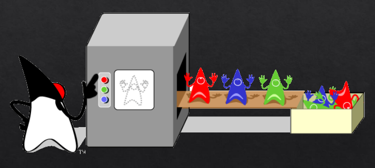
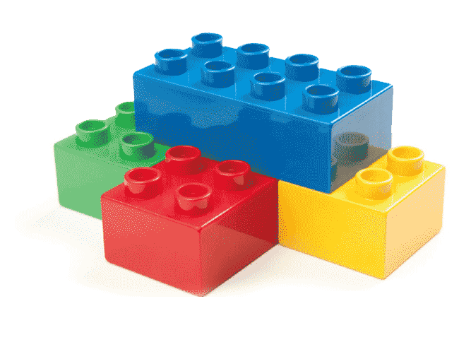

Java Extends
Uma nova jornada programando em Java
Episódio 01
"Começando a jornada com Java"
Dos 21 anos que vivi neste espaço e tempo já fui...
Monitor do LDMSE UNIFACS...
... Bolsista de Iniciação Científica ...
... Presidente do DAECOMP ...
... Vice presidente do IEEE UNIFACS ...
E ATUALMENTE estagiário da RNP
Costumo desenvolver projetos em:
Java Script Angular JS Android Python
Java
vamos começar a aventura!
Paradigma Orientação a Objetos
Contexto Histórico
- Década de 1960 -
- Os soviéticos enviaram o primeiro homem ao espaço.
- Início do uso da informática para fins comerciais.
- IBM lança o circuito integrado (chip).
Avanço no desenvolvimento do Hardware.
Surgimento do Paradigma Orientado a Objetos
Preocupação com a qualidade do software.
Reaproveitamento do código escrito.
Agilidade no desenvolvimento de sistemas.
*1
Lançamento das Linguagens com Orientação a Objetos
SMALLTALK
Object Pascal
C++
Fundamento do Paradigma Orientado a Objetos
“Em vez de construir um sistema formado por um conjunto de procedimentos e variáveis nem sempre agrupadas de acordo com o contexto, na orientação a objetos lidamos com objetos: estruturas que carregam dados e comportamento próprio, além de trocarem mensagens entre si com o objetivo de formar algo maior, um sistema.”*2
A origem da linguagem Java
1991 - James Goslin liderava o projeto "Green" na Sun Microsystem
“Tinha por objetivo criar uma nova geração de computadores portáteis, capazes de se comunicar de várias formas. E decidiram então criar uma plataforma de desenvolvimento em que o software pudesse ser portado para os mais variados tipos de equipamentos. E uma linguagem de programação.”
A nova linguagem foi constituída utilizando-se grande parte da estrutura da linguagem C++
sim...c++
A nova linguagem foi baseada nela
E o nome?
James Goslin inicialmente denominou esta linguagem de "Oak" em homenagem a uma árvore de carvalho que existia em frente ao seu escritório.
Mas já existia uma linguagem com este nome!
E agora? Que nome colocar?
Naquela ocasião, os membros da equipe foram até uma cafeteria local que servia café importado da Indonésia, chamado...
Java
1995 - Sun Microsystems lança a nova tecnoliga.
“Em maio de 1995, no Sun Works '95, a Sun Microsystems anuncia o lançamento da tecnologia Java.”*1
Navegador HotJava
O Java cresceu muito com a Internet, com a criação do navegador HotJava, que foi o primeiro a executar Applets - o que garantia animações as páginas estáticas.
A linguagem Java
- Execução independente da plataforma operacional
- Não opera com uso dos ponteiros
- Permite programação concorrente.
- Suporta o paradigma de orientação a objetos
Java
Execução independente do sistema operacinal
Se liga nisso!
JVM - Java Virtual Machine
description arrow_forward settings arrow_forward description arrow_forward settings_applications arrow_forward desktop_macPrograma Java é compilado - Gera arquivo .class (bite code) - Interpretado pela Máquina Virtual Java no computador.
Distribuições Java
O programa Java é distribuído em duas edições: JDK e JRE.
- JRE
- Formada apenas pela máquina virtual Java e seus componentes operacionais.
- É usado apenas para executar aplicações Java em um computador.
- JDK
- Ferramenta para desenvolvimento de programas codificados em Java.
- É formado pelo JRE + kit de desenvolvimento.
Programação Orientada a Objetos
Classes
Um modelo! Um conjunto de variáveis e funções que caracterizam algo.
“Conjunto de dados e funcionalidades que serão criados e usados. A classe recebe o nome de abstração.”*3
Referências
[*1] MANZANO, J.A.N.G., COSTA JÚNIOR, R. A. Java 8 - Programação de Computadores. Érica / Saraiva. 2014 - 1ª edição.
[*2] DALL'OGLIO, P. PHP: Programando com Orientação a Objetos. 552p. Novatec. 2015 - 3ª edição.
[*3] AMBLER,S.W. Análise e Projeto Orientados a Objetos: Um guia para o desenvolvimento de Aplicações Orientada a Objetos IBPI Press. 1997.
Episódio 02
"Trabalhando com métodos e seus parâmetros"
Classes e Objetos
Classes
Um modelo! Um conjunto de variáveis e funções que caracterizam algo.
Objeto
Instanciamos um objeto utilizando o operador new e um construtor.
Objetos
Construtores
Construtores criados em tempo de execução
Objeto
Mas o objeto foi criado com o construtor criados em tempo de execução, pelo Java.
Construtores Default
Objeto
O objeto foi criado com o construtor default.
Mais de um construtor na mesma classe
Objetos
Os objetos foram criados com mais de um construtor na classe. Cada construtor criou um objeto.

Sobrecarga de método
Sobrecarga de método
Overloading
Ocorre quando temos métodos com mesmo nome, mas parâmetros diferentes.
Ela é importante para quando quisermos o mesmo método com possibilidades de entradas diferentes.
Sobrecarga de método
Overloading
“Para que seja permititda a sobrecarga, os nomes dos métodos devem ser iguais, mas as assinaturas devem ser diferentes.”
Métodos Estáticos
Métodos Estáticos
Static
São funções que não dependem de nenhuma variável de instância, quando invocados executam sem a dependência de um objeto.
Para invocar esses métodos colocamos: NomeDaClasse.nomeDoMetodo();
Métodos Estáticos
“São acessados por alguma classe sem a necessidade de instanciá-los para usar.”
Entrada de Dados
Até breve!
Episódio 03
"Trabalhando com condicionais e laços"
Sobrecarga de método
Sobrecarga de método
Overloading
Ocorre quando temos métodos com mesmo nome, mas parâmetros diferentes.
Ela é importante para quando quisermos o mesmo método com possibilidades de entradas diferentes.
Sobrecarga de método
Overloading
“Para que seja permititda a sobrecarga, os nomes dos métodos devem ser iguais, mas as assinaturas devem ser diferentes.”
Booleanos
É um tipo de dado que permite apenas dois valores, true (verdadeiro) ou false (false).
Condicionais
IF...ELSE
Operador Condicional Ternário
“O operador ternário "?:" é um modo simples de fazer teste condicional, substituindo o if...else. Ele sempre vai retornar uma expressão.”
SWITCH
“Permite criarmos vários tipos de casos dependendo do resultado da condição.”
SWITCH
O "break"
“Só é realizado um 'case' de cada vez por conta do 'break' contido em cada comando dentro dos 'case'.”
Se retirarmos o break de dentro dos cases, o switch quando selecionar um 'case', vai executar o 'case' selecionado e todos os outros 'cases' abaixo.
Iterações
São laços, onde cada ciclo de repetição é chamado de iteração.
While
For
do...while
Sempre executa o código do laço pelo menos uma vez, independente da condição do while ser true ou false.